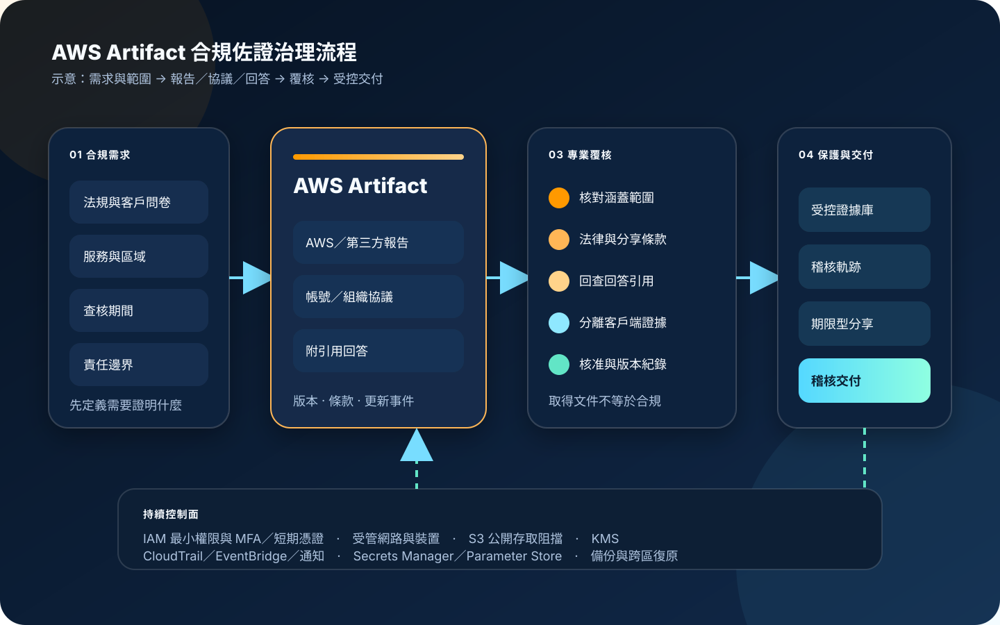

AWS Artifact：合規報告、協議與佐證治理
AWS Artifact 是 AWS 的稽核與合規入口，提供 AWS 及部分 AWS Marketplace 獨立軟體供應商的安全合規文件，也支援帳號或 AWS Organizations 層級的協議管理、文件更新通知，以及具來源引用的 Assurance Assistant。它能縮短取得佐證與回答供應商問卷的時間，但不會證明客戶工作負載已合規，也不能取代法務、隱私、風險與稽核人員的判讀。
作者：Dr. William｜查閱與發布：2026-11-10
服務定位
AWS Artifact 集中提供可下載的安全與合規文件，例如 ISO 認證、PCI 報告、SOC 報告與認證機構文件。部分 AWS Marketplace Vendor Insights 供應商也可透過 Artifact 提供第三方合規報告，支援供應商風險評估。
服務另提供 Artifact Agreements，讓具權限的人員檢視、接受、追蹤或終止適用於單一帳號或整個 AWS Organizations 組織的協議；Assurance Assistant 則可針對 AWS 安全控制與合規實務，從已驗證的 AWS 合規文件產生附引用的回答。這三類能力分別處理「取得佐證」「治理法律協議」與「加速盡職調查」，不應混為同一種合規結論。
核心概念與服務邊界
文件與協議
- AWS reports：AWS 的安全、合規、認證與稽核文件；每份文件都有自己的涵蓋範圍、期間與使用條款。
- Third-party reports：獲准使用 AWS Marketplace Vendor Insights 的客戶，可取得特定獨立軟體供應商分享的文件。
- Account agreement：只適用於接受協議的單一 AWS 帳號。
- Organization agreement：由 Organizations 管理帳號接受，涵蓋組織內既有與後續加入的成員帳號；組織必須啟用 all features。
- 條款與保密：下載、內部分享及交付稽核人員前，必須依個別文件首頁與適用條款確認可用範圍。
回答、更新與稽核
- Assurance Assistant：針對 AWS 的安全控制與合規姿態產生附來源引用的回答，支援常見問卷與 CSV、XLSX、DOCX、PDF。
- 適用邊界：Assurance Assistant 不處理客戶端實作判定；輸出仍須逐條查核引用、問題語意與適用期間。
- Notifications：可透過 AWS User Notifications 接收 Artifact 文件與設定相關更新；收件地址須完成驗證。
- EventBridge：Artifact 可直接送出文件更新、協議狀態變更、報告更新與協議更新事件。
- CloudTrail：可記錄 Artifact API 活動，支援追查誰在何時檢視中繼資料、取得報告或管理協議。
適合與不適合的使用情境
適合
- 架構審查、採購、供應商風險或外部稽核需要取得 AWS 的 SOC、ISO、PCI 或其他官方佐證。
- 多帳號組織需要集中管理適用協議，並讓新加入的成員帳號依協議規則自動納入。
- 法務、隱私、風險與資安團隊需要職責分離，將報告唯讀、協議唯讀、協議接受與通知管理拆開授權。
- 大量客戶安全問卷重複詢問 AWS 底層控制，需要使用附引用回答縮短資料蒐集時間。
- 需要追蹤報告版本、到期期間、協議狀態與文件更新，避免長期沿用過期佐證。
不適合或不能單獨完成
- 用 AWS 的 SOC 或 ISO 文件替代客戶自己的控制測試、滲透測試、風險評估或法規認證。
- 沒有核對服務、區域、查核期間與責任邊界，就宣稱整個 AWS 工作負載都在報告涵蓋範圍內。
- 把 Assurance Assistant 的回答直接交付客戶或監管機關，不檢查引用、條款、時效與客戶端控制。
- 需要持續蒐集客戶資源組態與控制執行證據；這類需求應搭配 Audit Manager、Config、Security Hub CSPM、CloudTrail 或外部 GRC。
- 需要管理所有供應商、地端系統、SaaS 與內部政策的完整企業 GRC 流程。
示意故事案例：金融科技供應商安全審查
以下為示意案例，不代表特定企業或正式部署。 一家金融科技公司準備讓新產品使用多項 AWS 服務，客戶要求提供 AWS 基礎設施的 SOC 與 ISO 佐證、確認適用協議，並完成一份涵蓋資料保護、存取控制、事件應變與營運持續性的供應商問卷。過去各團隊自行下載文件，檔案版本、分享權限與適用期間無法一致追蹤。
公司先由合規團隊建立所需文件清單，資安團隊以報告唯讀角色在 Artifact 檢索文件，核對涵蓋期間、AWS 服務、區域與分享條款。法務團隊使用獨立的協議唯讀權限檢視條款，只有經正式核准的角色可以接受或終止協議。對於問卷中的 AWS 底層控制問題，團隊以 Assurance Assistant 產生附引用草稿，再由控制擁有者逐條回查原始文件。
下載後的文件不留在個人電腦或公開協作空間，而是進入受控文件庫，以 KMS 加密、版本、保留期限、下載記錄及最小權限保護。客戶工作負載的 IAM、網路、加密、日誌、備份與復原證據則由其他控制流程提供，最後以責任矩陣把 AWS 佐證與客戶佐證分開呈現。

建置與運作流程
- 建立需求矩陣：列出法規、客戶問卷、稽核期間、AWS 服務、區域、必要報告、協議與責任人。
- 分類角色：區分報告下載者、第三方報告審查者、協議檢視者、協議接受者、Assurance Assistant 使用者、通知管理者與稽核人員。
- 使用企業身分：透過 IAM Identity Center 或聯合身分登入，要求 MFA 與短期憑證，禁止共用帳號、root 日常操作及長期 Access Key。
- 縮限 IAM：從報告唯讀、協議唯讀等管理政策或自訂政策開始，依實際動作、報告屬性與角色職責縮限；接受與終止協議採獨立核准。
- 判定協議範圍：確認應使用 account agreement 或 organization agreement；組織協議須由管理帳號、all features 與必要 Organizations 整合支援。
- 核對法律條款：在接受、終止或分享前，由法務、隱私與合規團隊確認條款、保密、適用帳號及資料類型。
- 下載與驗證報告：記錄文件名稱、版本、涵蓋期間、下載日期、來源帳號、適用服務、區域與分享限制。
- 保護本機下載：使用受管裝置、受控瀏覽器與必要的出口代理；下載完成後立即移入受控文件庫，不以個人信箱或公開連結傳遞。
- 建立受控證據庫：以 S3 Block Public Access、KMS、版本控制、必要的 Object Lock、生命週期與存取記錄保護下載文件。
- 使用附引用回答：Assurance Assistant 僅處理 AWS 端控制問題；逐條開啟引用、核對原文與時效，並把客戶端控制另行回答。
- 啟用更新通知：建立 AWS User Notifications 設定，驗證收件人；或以 EventBridge 接收 Artifact 文件、報告與協議事件。
- 建立稽核軌跡：使用組織層級 CloudTrail 記錄 Artifact API，將重要事件送往 CloudWatch、Security Lake、SIEM 或工單。
- 定期重驗：在稽核前、文件更新、服務範圍變更、帳號移入移出組織或協議狀態變更時重新核對。
- 管理交付：對外提供前確認文件條款允許分享，採具期限的受控管道，記錄收件人、用途、版本與撤銷程序。
- 演練中斷：測試 Artifact 暫時不可用、通知漏送、下載文件誤刪、KMS 不可用與組織成員離開時的替代佐證和復原流程。
成本、可用性與維運考量
AWS 官方文件指出 AWS Artifact 文件與協議免費提供，Assurance Assistant 也可在 Artifact 主控台免費使用。實際總成本通常來自周邊治理：S3 儲存與版本、KMS、Object Lock、CloudTrail、EventBridge、CloudWatch、Security Lake／SIEM、備份、文件管理系統，以及法務與稽核人力。成本估算應把文件保存年限、版本數、下載與交付流程、日誌留存及跨區復原納入。
免費不代表無限縮放風險。大量下載、重複保存、沒有生命週期的版本與過度廣泛的稽核日誌都可能增加周邊費用；Assurance Assistant 問卷仍需要人工覆核。應以需求清單、文件索引、單一受控證據庫及保存政策減少重複。
Artifact 是受管服務，但合規作業的可用性還依賴 AWS Management Console／API、企業身分提供者、瀏覽器、Organizations、User Notifications、EventBridge、CloudTrail、受控文件庫與 KMS。重要稽核不能只依賴臨時下載；應在條款允許範圍內保留已驗證版本、雜湊、索引、到期日與替代取得程序。
報告有查核期間與版本，協議狀態也會受帳號或組織生命週期影響。成員帳號離開組織後，原有 organization agreement 不再適用於該帳號；組織必須在遷移、拆分、併購與關帳流程中加入協議連續性檢查。
AWS Artifact 特有資安風險與控制
- 把 AWS 報告當成客戶認證：以責任矩陣分開 AWS 端佐證與客戶端控制，禁止用報告取代工作負載測試。
- 報告範圍誤讀：逐份記錄服務、區域、期間、控制、例外與補充說明，不只保存檔名。
- 過期文件持續流通：啟用 Artifact 通知與 EventBridge，建立文件到期與版本替換工單。
- 協議接受權過大：檢視與接受／終止權限分離，要求法務、隱私及業務擁有者核准，並保留核准證據。
- Organizations 管理帳號暴露：只在必要時使用管理帳號處理 organization agreement，採 MFA、短期憑證、受管工作站與緊縮 session。
- 成員帳號離開後失去涵蓋：在帳號遷移與組織退出前檢查替代 account agreement、資料處理義務及生效時間。
- 下載文件外洩：禁止公開 S3、公開連結、個人雲端硬碟與個人信箱；採 KMS 加密、版本、存取記錄及必要的 Object Lock。
- 文件條款違規分享：對每份報告保留分享條款，交付前由指定角色覆核，不以「已從 Artifact 取得」推定可公開。
- 受管裝置殘留：限制瀏覽器下載目錄、磁碟加密與本機保存時間，移轉受控文件庫後依政策清除暫存副本。
- 網路路徑缺少治理：Artifact 主控台與 API 存取使用企業受管網路、TLS、DNS／代理監控與最小出口；不要假設存在尚未驗證的私有端點。
- Assurance Assistant 錯誤或過度延伸：逐條驗證引用，限制問題在 AWS 控制範圍，客戶架構與法律結論由控制擁有者回答。
- 問卷上傳含機密：上傳前資料最小化與遮罩，禁止 credential、Access Key、Secret Key、Token、密碼及 cookie；必要內容以 [REDACTED] 取代。
- 長期人員憑證：所有 Artifact 使用者透過聯合身分、MFA 與短期憑證，禁止共享登入與程式碼內嵌認證資訊。
- CloudTrail 未持續保存：建立多區域組織 trail，保護日誌 S3 與驗證完整性，對報告取得及協議狀態變更告警。
- 通知收件人失效：確認 AWS User Notifications 地址已驗證，定期測試收件與離職撤銷，建立次要 EventBridge 路徑。
- 整合機密散落：自動化、工單與文件管理系統需要的機密放入 Secrets Manager／Parameter Store，不寫入標籤、問卷、日誌或腳本。
- KMS 單點失效：限制 key policy 與 grant，監控停用與排程刪除，演練文件庫在金鑰或區域故障時的復原。
- 佐證庫沒有備份：依文件條款與保存政策建立版本、備份與跨區／跨帳號復原，並定期驗證可讀性與雜湊。
共同責任邊界
AWS 負責 Artifact 受管服務的底層基礎設施、服務功能、AWS 報告與協議入口、Artifact API、與 Organizations 的服務整合、Assurance Assistant 的來源檢索與引用功能，以及文件、報告和協議更新事件的服務端產生。AWS 也負責其雲端基礎設施與服務本身的實體及底層安全。
客戶負責判定法規、報告與協議是否適用，核對服務、區域、期間、條款及引用，設定帳號或組織協議，並保護下載後的文件。IAM 最小權限、MFA／短期憑證、受管網路與裝置、公開存取阻擋、KMS、Secrets Manager／Parameter Store、CloudTrail／CloudWatch、通知、備份與跨區復原、法律判讀、客戶端控制證據及最終合規聲明均屬客戶責任。
上線與維運可執行檢查清單
- □ 已列出法規、客戶問卷、AWS 服務、區域、稽核期間、必要報告、協議與責任人。
- □ 報告下載、第三方報告、協議檢視、協議接受／終止、問卷與通知角色已分離。
- □ 所有人員均透過 IAM Identity Center 或聯合身分使用 MFA 與短期憑證。
- □ root、共用帳號與長期 Access Key 不用於日常 Artifact 操作。
- □ IAM 權限已依實際報告、協議與操作縮限，並定期以 Access Analyzer 或權限紀錄覆核。
- □ account agreement 與 organization agreement 的適用邊界已確認。
- □ Organizations 已啟用 all features，管理帳號操作有獨立核准與監控。
- □ 協議接受、終止與外部分享均經法務、隱私及合規團隊核准。
- □ 每份文件均記錄名稱、版本、期間、下載日、服務、區域、條款與來源帳號。
- □ 報告所涵蓋的 AWS 控制與客戶自行負責的控制已分開列示。
- □ Artifact 存取使用受管工作站、受控瀏覽器、TLS 與企業網路／代理。
- □ 下載文件已移入啟用 S3 Block Public Access、KMS、版本與存取記錄的受控證據庫。
- □ 個人電腦、個人信箱、公開協作空間與永久分享連結不保存受限文件。
- □ Assurance Assistant 的每個回答都已開啟引用並回查原始文件。
- □ 上傳問卷不含 credential、Access Key、Secret Key、Token、密碼、cookie 或不必要個資。
- □ AWS User Notifications 收件地址已驗證，文件與協議更新可正常送達。
- □ EventBridge 已監控 Artifact 文件、報告與協議事件，失敗有重試、死信或工單升級。
- □ 組織層級 CloudTrail 已記錄 Artifact API，日誌受 KMS、版本與存取控制保護。
- □ CloudWatch、SIEM 或工單已對未授權下載、協議變更、通知失效與異常活動告警。
- □ 外部整合機密使用 Secrets Manager／Parameter Store，沒有寫入問卷、標籤、日誌或程式碼。
- □ 帳號加入、移出、組織拆分與關帳流程包含協議涵蓋與文件保存檢查。
- □ 已建立文件版本替換、保存、到期、撤銷與對外交付紀錄。
- □ 已演練 Artifact 暫時不可用、通知漏送、文件誤刪、KMS 不可用及跨區復原。
AWS 官方一手來源
- What is AWS Artifact?（查閱：2026-11-10）
- Getting started with AWS Artifact（查閱：2026-11-10）
- Downloading reports in AWS Artifact（查閱：2026-11-10）
- Managing agreements in AWS Artifact（查閱：2026-11-10）
- Accepting agreements for your organization（查閱：2026-11-10）
- Using Assurance Assistant in AWS Artifact（查閱：2026-11-10）
- Identity and access management in AWS Artifact（查閱：2026-11-10）
- AWS managed policies for AWS Artifact（查閱：2026-11-10）
- Logging AWS Artifact API calls with AWS CloudTrail（查閱：2026-11-10）
- AWS Artifact events in Amazon EventBridge（查閱：2026-11-10）
- AWS Artifact FAQ（查閱：2026-11-10）
- AWS Shared Responsibility Model（查閱：2026-11-10）
內容說明
本文依查閱日可用的 AWS 官方文件整理，作為基礎學習與架構討論材料；實際作業仍須依最新文件版本、報告涵蓋範圍、協議條款、AWS Organizations 結構、IAM 政策、Assurance Assistant 支援範圍、通知能力及組織法務與稽核意見調整。